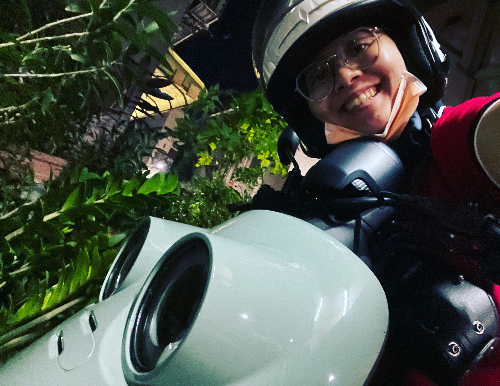

初次相遇
我還記得那天，陪魚魚去買機車。
一排新車裡，魚魚一眼就看中了這台Vinoora。圓圓的車頭，像一張笑臉；搭上它的顏色，怎麼看都順眼。
像是跟它約好了要一起走兩年，魚魚選了它，並為它取名字。
就叫它漁船吧。
漁船的處女秀
晶片鑰匙一靠近，輕輕一轉，儀表亮起來。在將漁船騎回家的路上，每條路魚魚都騎得小心翼翼，深怕新車弄壞了。
魚魚的日常
上班、下班、買生魚片，下雨天的雨衣和晴天的安全帽。它不大，剛好裝得下她的每一天。

小確幸
沿著河堤吹風，找一間沒去過的小店。藏著許多平凡又好笑的回憶，魚魚騎著它嘴角總是洋溢著藏不住的笑容。
英勇犧牲
那天她騎著漁船綠燈起步，但是有不守規矩的壞吉普車，迎面撞過來。
為了守護她，漁船英勇犧牲了
最後一程
把置物箱裡的東西一件件拿出來，最後再看一眼那為了救主人而英勇犧牲的車子。它陪魚魚的時間不算長，但每一公里都是真的。